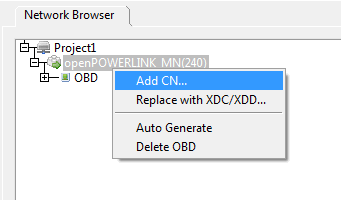
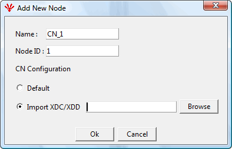
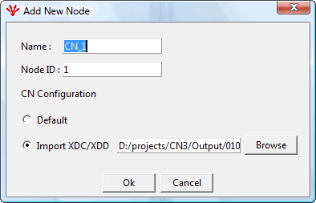
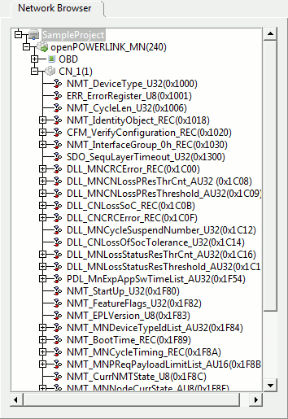

A Controlled Node(CN) can be added by right-clicking on the Managing Node(MN). In the small menu that appears, select 'Add CN...' as shown below.

After clicking on 'Add CN' a pop-up will appear where the user can enter CN related information and can select the xdc/xdd files for that CN.
CN Name - Name of the CN. This name will be visible in the tree. The maximum length of CN Name is 32 characters.
CN ID (Node ID) - NodeID of the CN. NodeID can only be between 1 to 239

Like MN, CN can also be added with two options :
Default - A default XDD for CN will be used in this case. This file will be installed with the installation of the openConfigurator. This file is named as openPOWERLINK_CN.
Import XDC/XDD - The User can import his/her own XDD/XDC file for the CN.
The user selects the xdd/xdc file and then presses 'OK'

CN Node will be added to the tree.
Expanded view of CN Node can be seen by clicking the '+' sign in front of the CN node. The view of the tree will be visible as shown below.
